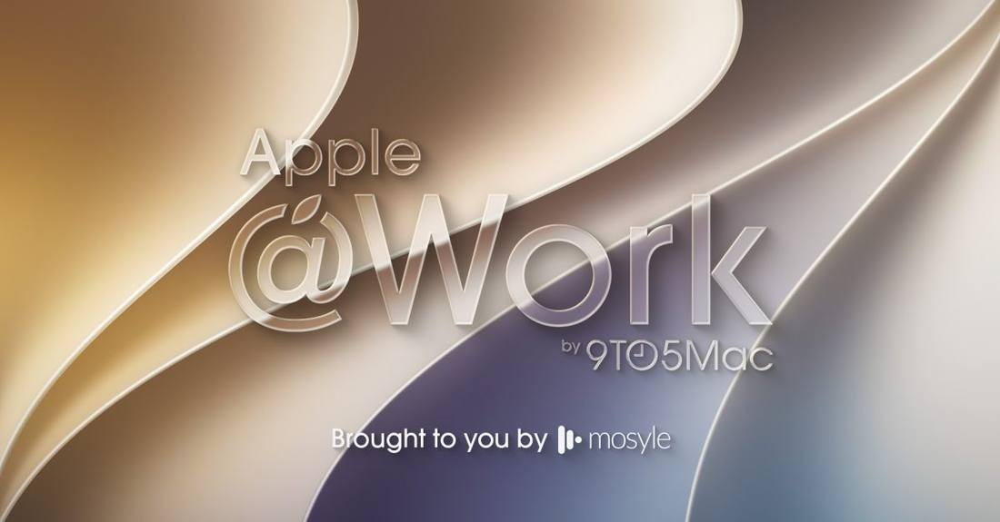

Two Mac Studios Run an 816-Billion-Parameter Open Model
Desktop hardware has held a flagship-class open model for the first time, and the cost structure of inference has changed. Apple shipped no large model of its own, yet with its chips and MLX it has taken the inference entry point; cloud compute is no longer the only option.

- 01THE RELEASE — Meta released it on October 15; the weights went up on Hugging Face and the three major cloud platforms.
- 02THE LICENSE — Under the Muse Model License, API providers with annual revenue over $20 million need a separate agreement.
- 03THE APPLE TEST — Apple's machine learning research team tested it. Two machines run it, fast enough for real agentic workflows.
WHAT HAPPENEDWhat Happened
Meta released Muse Spark Open on October 15, calling it the most capable open-weights model from the US to date, activating about 4.2 billion parameters per token with 1M-token context. The weights went up on Hugging Face and into the model catalogs of Amazon, Google and Microsoft clouds.
Apple's machine learning research team published test results the same day: the NVFP4 version is about 493 GB, with four machines in tensor parallelism generating 36.73 tokens per second and two machines 24.99 tokens per second, with single-machine peak power draw of about 300 watts.
The M5 Ultra offers up to 512 GB of unified memory per machine at 1.2 TB/s of bandwidth, about 1 TB across two machines. The model card states self-hosting NVFP4 needs at least 700 GB of VRAM, and the BF16 version needs 2 TB. The 512 GB version went on sale October 28, priced at $22,299.
WHAT TO WATCHThe Benchmark Scores Are Self-Reported; Wins and Losses Split
MCP-Atlas tool calling scored 89.2, ahead of Kimi K3's 82.3. Terminal-Bench 2.1 coding scored 76.4, behind Kimi K3's 85.0. The same model ranks differently on different tasks.
All scores were published by Meta and are unverified independently. Ranking open models takes third-party retesting. A single leaderboard does not tell the whole story.
WHY IT MATTERSApple Shipped No Large Model, Yet Took the Inference Entry Point
9to5Mac called the Mac Studio the spiritual successor to the Xserve, because real agentic workflows already run locally. Muse Code driving code commits and video edits without sending data to the cloud.
For developers the change is concrete: local inference removes cloud queues and call fees, at the cost of a high-end workstation. Anyone for whom that math works will move first.
THE SHIFTWhat Changed
SIGNAL JUDGMENT — ANALYSISThe Model Is Meta's, the Entry Point Is Apple's
Tokenta Signal's judgment: The real significance of Muse Spark Open is not the parameter count. Apple running it on two Mac Studios proves a flagship open model can now leave the data center. The license is the key variable: the Muse Model License is not Apache 2.0, and large API providers need a separate agreement, so 'open' has boundaries. The benchmark scores are Meta's own claims, and the composite index trails GLM 5.3 and Kimi K3, with tool calling and coding going different ways. No single score settles the ranking.
WHAT REMAINS UNCERTAINWhat Remains Uncertain
EVIDENCEEvidence
9to5Mac reported on November 14 that the Mac Studio is the spiritual successor to the Xserve, with Apple silicon and MLX letting real agentic workflows run locally as Muse Code drives Muse Spark Open through iOS changes and video edits.
PRIMARY SOURCESPrimary Sources
- 9to5Mac: Apple @ Work: The spiritual successor to the Xserve is here, thanks to Apple silicon and MLX
https://9to5mac.com/2026/11/14/apple-work-the-spiritual-successor-to-the-xserve-is-here-and-apple-never-had-to-ship-an-llm-to-get-there/ - Gadgets360: Meta Muse Spark Open AI Model Launch Apple Mac Studio Partnership
https://turbo.gadgets360.com/en/ai/meta-muse-spark-open-ai-model-launch-apple-mac-studio-partnership-12194575?utm_source=website&utm_medium=content&utm_campaign=gadgets360turbo
RELATEDRelated Intelligence
- Amazon Nears $7.5B Deal to Buy AI Startup Decart, FT Reports
- TSMC and Samsung Pause Chip Shipments as New US Export Rules Reach Beyond AI
- Cursor Tells House It May Drop Chinese Open-Weight Models Over 'Geopolitical Risk'
- AI Agents Found a Zero-Day in Medical-Imaging Software and Got Root in 11 Minutes